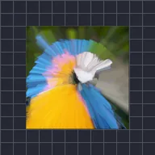

ズームストリーク

レイヤーのコピーを中心から拡大し、最も明るいピクセルを残して、点から放射状に伸びるストリークを作ります。平均にするとズームブラーになります。R、G、B、Aはチャンネルごとに、コピーが最小・最大・平均のどれを残すか、またはそのチャンネルを変更しないかを選びます。
設定
| 設定項目 | 種類 | 範囲 | デフォルト |
|---|---|---|---|
| 中心 | ポイント（X, Y） | -1〜2 | 0.5, 0.5 |
| 強さ | 数値 | 0〜1 | 0.15 |
| アルファ | 数値 | 0%〜100% | 100% |
| バイアス | 数値 | -100%〜100% | 0% |
| R | 選択 | 最小、最大、平均、オフ | 最大 |
| G | 選択 | 最小、最大、平均、オフ | 最大 |
| B | 選択 | 最小、最大、平均、オフ | 最大 |
| A | 選択 | 最小、最大、平均、オフ | 最大 |